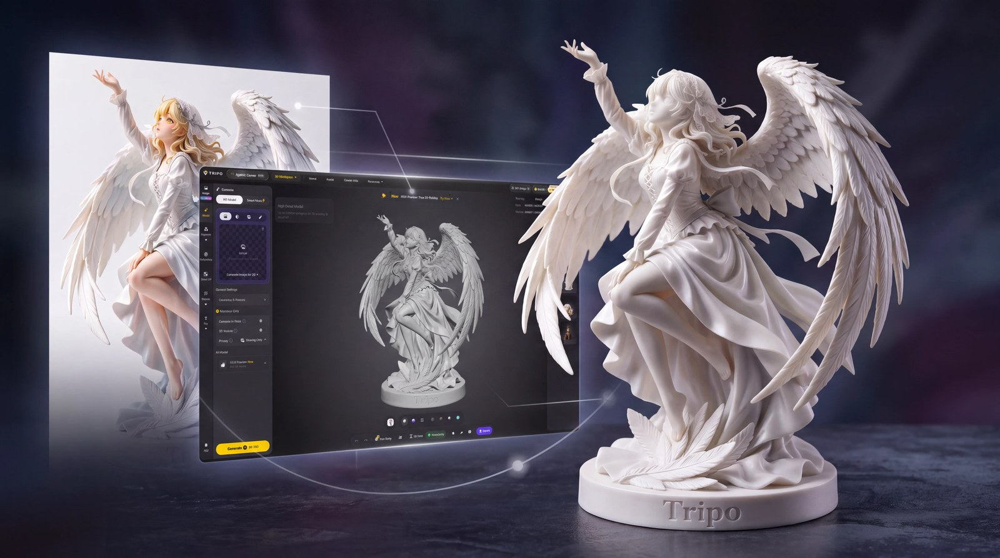
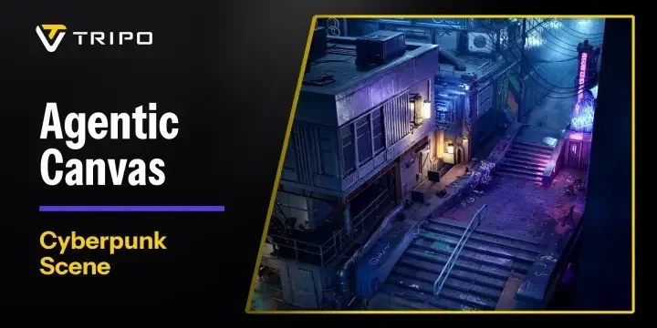
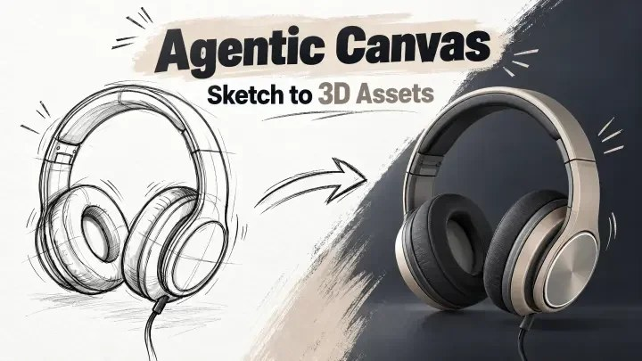

#06 · ai-3d
Tripo H3.5 手辦列印教學：先清理參考圖，再分件檢查薄壁
Tripo 以天使手辦示範 H3.5 的圖片轉模型流程：移除懸空元素、生成高細節網格、分件封口，再依實際尺寸檢查可列印性並交給切片軟體。

SOURCE PREVIEW
· Local visual evidence · 點圖開啟原始來源
AI 3D ★★★★☆
完整分析
參考圖先排除懸空零件
範例先從天使圖片移除懸空的鳥與光環，避免模型把不適合直接放上列印平台的部分一併重建；生成時可調整網格品質與面數，但 H3.5 僅提供三角面拓樸。
分件後封口再輸出
教學將模型拆成四件，並以 Fill Parts 的 Quick Cap 或 AI Completion 封閉分割面；完成尺寸檢查後可輸出 STL、3MF，或送往切片軟體，保留設定尺寸。
自動修復不會補厚薄壁
來源指出 Auto Fix 修復孔洞及非流形邊，但不加厚薄壁。範例在一百五十毫米高度仍有薄壁問題，放大到二百毫米才通過工具檢查，這不等於所有模型都適用同一尺寸。
來源 ↗
#08 · ai-3d
草圖變列印模型：Tripo 畫布串接重拓樸與網格檢查
Tripo 以泰迪熊草圖示範列印工作流，在 Control 模式逐步確認概念圖與模型，再將兩百萬面模型重建為十五萬面，交由 AI 3D Lab 檢查並輸出。
 SOURCE PREVIEW
· Local visual evidence · 點圖開啟原始來源
SOURCE PREVIEW
· Local visual evidence · 點圖開啟原始來源
AI 3D ★★★☆☆
完整分析
列印用途決定流程設定
教學要求提示詞明確說明用於三維列印，讓規劃目標朝向實體網格；範例使用 Control 在關鍵步驟停下，並選擇直接精修草圖後建模，沒有額外生成多視角參考。
降低面數並保留可重用流程
完成模型約有兩百萬面，範例接上 Retopology，設定十五萬面並關閉 Smart Low Poly 與 Smart UV。輸出後仍可保存整張流程為範本，供下個任務調整與重用。
檢查結果限於示範模型
AI 3D Lab 的請求列出水密性、壁厚、孔洞與非流形邊等檢查。官方表示這個模型通過 Blender 列印檢查、錯誤數為零並完成切片；這是個案結果，不是所有生成物的保證。
來源 ↗
#09 · ai-3d
月球機甲原型教學：統一 UE5 骨架、拆分武器與選擇性破壞
Tripo 的月球機甲案例把玩家、敵人及前哨站分成獨立資產，角色採 UE5 Mannequin 骨架，再於 Unreal 建立操控、戰鬥與局部建築破壞。
 SOURCE PREVIEW
· Local visual evidence · 點圖開啟原始來源
SOURCE PREVIEW
· Local visual evidence · 點圖開啟原始來源
AI 3D ★★★☆☆
完整分析
角色與裝備先分離
教學要求機甲提取時不含步槍，避免武器與手部一起蒙皮；角色經 T-pose、多視圖與 P2.0 生成後，使用 Humanoid 和 UE5 Mannequin 預設綁定，保留一致的骨骼命名。
共用骨架支援原型替換
來源說明相同骨架可讓新角色沿用藍圖、骨骼掛接與動畫邏輯；機甲、武器和建築各自管理，也能只修正有問題的角色分支，重新執行該分支的綁定與動畫。
重型建築不直接加入破碎
案例只讓部分輕量、可接近建築參與 Chaos 破壞，約一百九十萬三角面的通信塔保持靜態。碎片數、傷害值與模擬開銷都屬專案設定，來源要求在自己的關卡中重新測試。
來源 ↗
#10 · ai-3d
室內參考圖轉 Blender 場景：拆出家具、分支修整與分集合交付
Tripo 的室內場景案例先提取八件家具，以 H3.1 生成資產，再於 AI 3D Lab 組裝及布光；輸出的 Blender 專案把家具、建築、燈光與相機分開管理。
 SOURCE PREVIEW
· Local visual evidence · 點圖開啟原始來源
SOURCE PREVIEW
· Local visual evidence · 點圖開啟原始來源
AI 3D ★★★☆☆
完整分析
家具資產與房間結構分開
工作流把 Upload 接到 Element Extraction，從室內圖提取家具參考，再用 H3.1 生成模型；首批八件資產包含沙發、茶几、座椅與燈具，規則牆面和地板可在組裝時建立。
只重做需要調整的分支
若椅子不理想，可回到該分支修改並重跑受影響的下游步驟，保留已合格資產。匯出的 Blender 專案將家具、建築結構、光源及相機分集合，方便替換模型與檢查場景。
多視圖與減面仍要核對
教學提醒不同視角可能出現桌腿數量或厚度不一致，應先修參考圖；重拓樸又會改變網格及 UV，因此後接新貼圖生成，並檢查植物細枝是否因減面消失。
來源 ↗
#11 · ai-3d
火雞卡片夾實作：從 Tripo 分件模型到列印、打磨與組裝
這份 Tripo 教學以木雕風格火雞為例，使用 H3.1 生成模型，再整理成五個部件、匯入 Bambu Studio 切片，最後處理支撐痕與上色並黏上卡片夾。
SOURCE PREVIEW
· Local visual evidence · 點圖開啟原始來源
AI 3D ★★★☆☆
完整分析
生成後重新整理分件
作者以多視圖參考配合 H3.1、分件生成與 Ultra Mesh Quality 建模，再於 Segment 合併過多的零件，整理成五件以便打磨及上色，並透過 Fill Parts 補齊接合處孔洞。
統一尺寸再安排列印
教學輸出 3MF，在 Bambu Studio 先當作多部件物件載入、統一縮放為十公分高，再拆成獨立物件排列。列印後處理支撐痕與層紋，組裝時把小夾子黏在尾羽上。
範例參數不代表免調整
來源明示列印設定僅供參考，不同印表機、噴嘴及耗材需各自調整；實作也出現翅膀錯層與影響頸部貼合的支撐痕，顯示生成模型之後仍有後處理工作。
來源 ↗
#12 · ai-3d
Tripo 節點畫布場景教學：分開生成建築與道具，再匯入 UE5
官方以賽博龐克場景示範 Agentic Canvas：建築使用 H3.1、小型道具使用 P2.0，經 AI 3D Lab 組裝與調光後輸出專案及 UE5 匯入腳本。

SOURCE PREVIEW
· Local visual evidence · 點圖開啟原始來源
AI 3D ★★★☆☆
完整分析
按資產需求選擇生成模型
教學把主要建築與標誌牌、垃圾桶等道具分開：主場景使用 H3.1 保留幾何細節，小物件使用 P2.0 的 Smart Mesh 控制面數，生成步驟以相連節點保留在畫布。
組裝結果交回引擎編修
AI 3D Lab 依參考圖安排模型、布局與燈光，輸出專案檔和 UE5 匯入腳本；在教學案例中，腳本會匯入模型及燈光，使用者仍能進入 UE5 繼續調整或渲染。
自動執行仍需要場景檢查
Control 模式會在關鍵步驟暫停，Auto 的確認較少；來源要求輸出前檢查建築位置、道具比例與燈光。約二十分鐘是這個示範的描述，不能視為任意場景的交付保證。
來源 ↗
#13 · ai-3d
草圖轉資產入門：克隆 Tripo 七節點範本並保留上游結果
Tripo 以耳機草圖示範 Draft to Assets 範本，串接草圖清理、網格、UV、貼圖及 PBR；使用者克隆後替換圖片，預覽模型，再選擇輸出格式與貼圖解析度。

SOURCE PREVIEW
· Local visual evidence · 點圖開啟原始來源
AI 3D ★★★☆☆
完整分析
七個節點串接生成步驟
Draft to Assets 範本包含 Upload、兩道草圖清理，以及 Smart Mesh、Smart UV、Texture Generation 和 PBR；教學以耳機草圖展示這條由左至右的生成流程。
局部重跑保留已完成工作
來源說明出錯時可找到對應節點，修改後重跑，前面完成的步驟會保留。最後可選擇格式與貼圖解析度輸出，也提供 Blender、Mixamo 和 3ds Max 預設。
先克隆才有編輯權限
範本預覽只能查看，必須 Clone 成可編輯副本才能替換輸入；生成後的查看器可檢視拓樸、面數與頂點數，不能把開啟範本直接視為已完成模型檢查。
BRIEF｜來源已驗證；證據深度較有限，完整分析會明確區分已知資訊與待驗證事項。
來源 ↗
#14 · ai-3d
Roblox 原型製作案例：MCP 編修場景、Tripo 道具與行動版待測項目
Tripo 的 Your Turn 案例介紹 AI 客戶端透過 Roblox Studio MCP 建構與測試遊戲，再以生成道具替換占位模型；文章也列出手機效能與持久化存檔尚待確認。
SOURCE PREVIEW
· Local visual evidence · 點圖開啟原始來源
AI 3D ★★★☆☆
完整分析
先驗證規則再替換模型
工作流先用基礎部件搭建場景與道具占位物，為模型、攝影機及物品位置命名附著點，再導入 Tripo 生成的 GLB。這讓美術替換能沿用已建立的遊戲邏輯。
測試分開處理伺服器與介面
案例把比賽狀態、私密序列、AI 決策及客戶端介面分開，私密序列只留在伺服器；文中記錄四百場伺服器模擬後，再進入 Play 模式以畫面和控制台檢查勝敗流程。
原型完成仍有裝置負載問題
房間道具合計約五十萬三角形，並使用多盞投射陰影的燈光，來源承認負載較高。手機橫向介面雖已調整，Studio 預覽仍只保存當次進度，持久化存檔與手機效能尚待檢查。
來源 ↗
#15 · ai-3d
《The Red Scarf》Godot 案例：共用布局資料、生成資產與完整關卡測試
這份 Boss 戰製作紀錄結合 Claude Code、Tripo 與 Godot，讓概念圖、灰盒和正式模型共用小鎮布局資料，並以資產檢查及從選單到結局的測試修正問題。
 SOURCE PREVIEW
· Local visual evidence · 點圖開啟原始來源
SOURCE PREVIEW
· Local visual evidence · 點圖開啟原始來源
AI 3D ★★★☆☆
完整分析
一份布局同時服務灰盒與美術
案例用 Node 腳本產生小鎮平面 SVG，同時輸出供 Godot 使用的 JSON；工具再從相同資料建立灰盒，並將方塊替換成相同位置的 Tripo 模型，避免兩版布局分別維護。
以代表資產決定生成方案
作者先用同一張超市圖片比較模型系列與面數限制，再讓建築、車輛及道具採 P1，有機形體採 H v3.1，角色採 P2。來源明確將此定位為該遊戲的選擇，而非通用排名。
自動化流程仍暴露實際缺陷
角色重定向超過五段動畫曾失敗，因此拆成較小任務；完整關卡測試又找到朝向、特效及檢查點重置問題。案例顯示模型生成與程式完成後，仍需在遊戲內驗證整段流程。
來源 ↗
#16 · ai-3d
草圖到 UE5 角色：Tripo 拓樸檢查、局部貼圖修整與面部材質修正
這份 2026 年 9 月教學把角色草圖整理成 T 姿勢參考，再以 P2.0 生成網格、製作 PBR 貼圖與人形綁定；引擎內檢查則找出面部不當金屬反光。
SOURCE PREVIEW
· Local visual evidence · 點圖開啟原始來源
AI 3D ★★★☆☆
完整分析
生成後檢查布線與服裝結構
教學以 T 姿勢保留角色設計，並採 Smart Mesh、四邊形拓樸及 P2.0 生成；線框檢查聚焦整體布線、服裝形體、臉部結構與網格連續性，再進入材質和綁定。
局部編修後預覽角色動作
貼圖工具可用文字或筆刷修正特定區域，不必重做整套貼圖；人形自動綁定後，先利用預設動畫觀察動態，再透過一般匯出或 DCC Bridge 送入 Unreal。
引擎光照揭露材質錯誤
案例角色進入引擎後，臉部出現不應有的金屬反光；作者透過停用金屬度貼圖資訊修正。這是該素材的問題處理，並非所有角色都應移除金屬度資料。
來源 ↗
#17 · ai-3d
Tripo 工作區導覽：檢查網格、拆分部件，再接到 DCC
這份 2026 年 9 月指南依操作順序介紹 Tripo 工作區：從圖片或文字生成，經貼圖修整、重拓樸、部件拆分與綁定，再使用專用外掛連接 DCC。
 SOURCE PREVIEW
· Local visual evidence · 點圖開啟原始來源
SOURCE PREVIEW
· Local visual evidence · 點圖開啟原始來源
AI 3D ★★★☆☆
完整分析
從參考與預覽開始
來源介紹文字、單圖與最多四個角度的多視圖輸入；網格生成後，先看法線、顏色與 HDR 光照反應，再處理貼圖瑕疵。
部件拆分銜接材質與動畫
拆分工具可分離翅膀、四肢或材質區域；綁定時選擇人形或四足類型，預覽內建動作後，再以 DCC Bridge 專用外掛傳送資產。
保留回退與重新合併的步驟
指南提醒部件拆得過多時可重新合併，後續修改出問題則用歷史記錄回退；這些是工作區的修整手段，不能取代對實際生成結果的檢查。
BRIEF｜來源已驗證；證據深度較有限，完整分析會明確區分已知資訊與待驗證事項。
來源 ↗
#18 · ai-3d
Tripo 模型轉模組容器：Bambu Studio 分件、配色與接合間隙
這份 2026 年 9 月教學把 AI 生成模型輸出為 3MF，再於 Bambu Studio 修復、切割及建立接合結構，將貼圖配色轉為實際列印部件與耗材設定。
 SOURCE PREVIEW
· Local visual evidence · 點圖開啟原始來源
SOURCE PREVIEW
· Local visual evidence · 點圖開啟原始來源
AI 3D ★★★☆☆
完整分析
模型生成與分件加工分開
教學先以 HD Model、Ultra Mesh Quality 及 AI Complete 產生網格，目標設定兩百萬面，輸出 3MF 後再於 Bambu Studio 修復非流形邊、調整尺寸及切割。
貼圖顏色需轉成耗材配置
來源區分 AI 模型的 UV 貼圖與 FDM 耗材顏色，要求為切割部件指定主要耗材，再用 Color Painting 處理局部色塊；不是把彩色貼圖直接當作列印材料。
接合公差需依成品調整
範例為螺紋及定位銷分別設定間隙，並指出擠出過量可能讓螺紋卡住；其修正方式是增加螺紋間隙。這些數值屬該容器的示範設定，不代表不同尺寸都能直接沿用。
BRIEF｜來源已驗證；證據深度較有限，完整分析會明確區分已知資訊與待驗證事項。
來源 ↗
#19 · ai-3d
照片轉列印人偶：先確認背面參考，再檢查水密網格與細部厚度
這份 2026 年 9 月教學串起照片選擇、Tripo 模型生成、網格清理、切片與支撐；特別提醒單張照片未呈現的背面是推斷結果，生成後仍需檢查可列印性。
 SOURCE PREVIEW
· Local visual evidence · 點圖開啟原始來源
SOURCE PREVIEW
· Local visual evidence · 點圖開啟原始來源
AI 3D ★★★☆☆
完整分析
參考圖決定可觀察的形體
教學建議使用輪廓清楚、光線柔和且背景簡單的參考圖，也可提供正面、左右與背面視圖；單圖補出的未見區域屬推斷，若背面造型重要，應另拍背面作為輸入。
生成後接續網格與切片處理
作者以 HD Model 作為列印路徑，並介紹以雕刻模式平滑表面、Mesh Bisect 切平底部，再依切片器支援匯出 STL 或 OBJ；這些步驟把生成模型接到實體輸出的準備工作。
封閉表面不等於細節足夠堅固
來源要求檢查孔洞與非流形邊，也提醒手指、觸角等突出部位可能過薄而折斷；進入切片階段仍需檢查自動支撐，不能以畫面看似完整代替壁厚與支撐檢查。
來源 ↗